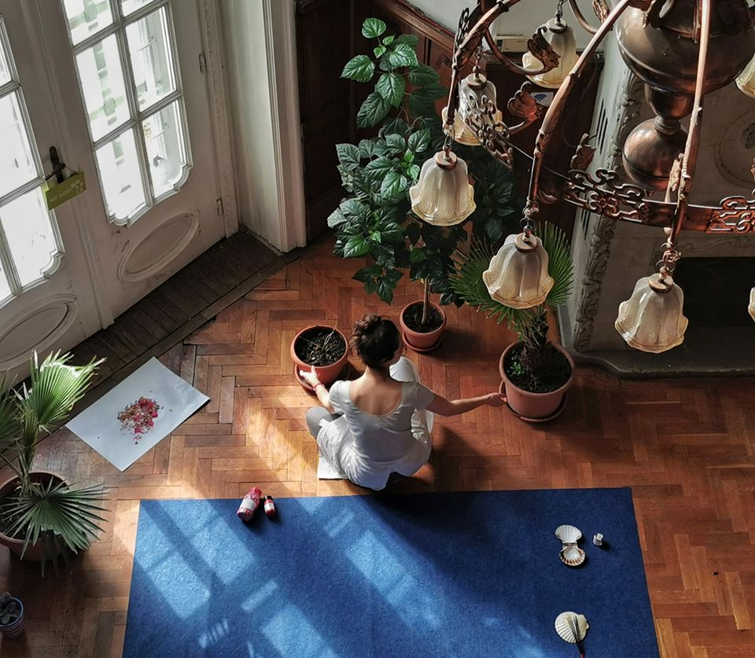
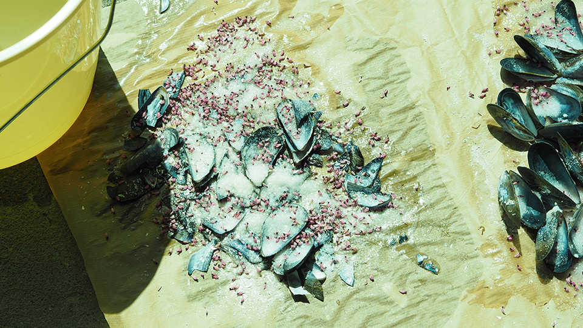

Travail en cours à l'atelier
Rennes
Mars 2021
En préparation de l'exposition The weight of light avec Kahina Loumi
Orangerie Est, Parc du Thabor, Rennes
Septembre 2021

Focul care arde - installation en cours de réalisation
Matériaux divers, enceinte diffusant une musique de l'artiste Harilay Rabanjamina composée pour l'installation,
texte écrit pendant la voyage de la France vers la Roumanie, imprimé sur feuillet traduit du français au roumain
Institut français de Timișoara, Roumanie
Février 2020

GENERATOR #6, centre d'art 40mcube, Rennes - travail en cours à l'atelier
Coquilles de moules, sel, fleurs de bruillère
Liffré
Avril 2020

GENERATOR #6, centre d'art 40mcube, Rennes - travail en cours à l'atelier
Liffré
Avril 2020